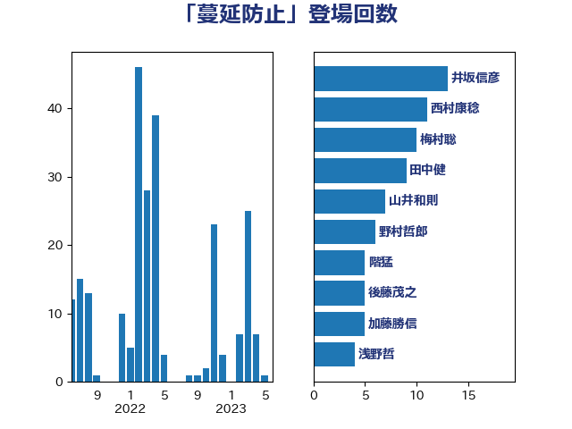

単語「蔓延防止」

| 井坂信彦 | 立憲民主党 | 13 回 |
| 西村康稔 | 自由民主党 | 11 回 |
| 梅村聡 | 日本維新の会 | 10 回 |
| 田中健 | 国民民主党 | 9 回 |
| 山井和則 | 立憲民主党 | 7 回 |
| 野村哲郎 | 自由民主党 | 6 回 |
| 階猛 | 立憲民主党 | 5 回 |
| 後藤茂之 | 自由民主党 | 5 回 |
| 加藤勝信 | 自由民主党 | 5 回 |
| 浅野哲 | 国民民主党 | 4 回 |
| 阿部知子 | 立憲民主党 | 3 回 |
| 長妻昭 | 立憲民主党 | 3 回 |
| 浦野靖人 | 日本維新の会 | 3 回 |
| 武部新 | 自由民主党 | 3 回 |
| 山岡達丸 | 立憲民主党 | 3 回 |
| 小沼巧 | 立憲民主党 | 3 回 |
| 友納理緒 | 自由民主党 | 3 回 |
| 鈴木義弘 | 国民民主党 | 2 回 |
| 金村龍那 | 日本維新の会 | 2 回 |
| 金子恵美 | 立憲民主党 | 2 回 |
| 金子恭之 | 自由民主党 | 2 回 |
| 遠藤敬 | 日本維新の会 | 2 回 |
| 羽生田俊 | 自由民主党 | 2 回 |
| 河野太郎 | 自由民主党 | 2 回 |
| 東徹 | 日本維新の会 | 2 回 |
| 本田顕子 | 自由民主党 | 2 回 |
| 山際大志郎 | 自由民主党 | 2 回 |
| 小沢雅仁 | 立憲民主党 | 2 回 |
| 宮崎雅夫 | 自由民主党 | 2 回 |
| 吉田久美子 | 公明党 | 2 回 |
| 勝俣孝明 | 自由民主党 | 2 回 |
| 一谷勇一郎 | 日本維新の会 | 2 回 |
| 鳩山二郎 | 自由民主党 | 1 回 |
| 須藤元気 | 無所属 | 1 回 |
| 青柳陽一郎 | 立憲民主党 | 1 回 |
| 野田佳彦 | 立憲民主党 | 1 回 |
| 道下大樹 | 立憲民主党 | 1 回 |
| 角田秀穂 | 公明党 | 1 回 |
| 萩生田光一 | 自由民主党 | 1 回 |
| 簗和生 | 自由民主党 | 1 回 |
| 笠井亮 | 日本共産党 | 1 回 |
| 稲富修二 | 立憲民主党 | 1 回 |
| 田村貴昭 | 日本共産党 | 1 回 |
| 田村憲久 | 自由民主党 | 1 回 |
| 牧山ひろえ | 立憲民主党 | 1 回 |
| 浜地雅一 | 公明党 | 1 回 |
| 泉田裕彦 | 自由民主党 | 1 回 |
| 池下卓 | 日本維新の会 | 1 回 |
| 横沢高徳 | 立憲民主党 | 1 回 |
| 柚木道義 | 立憲民主党 | 1 回 |
| 松本剛明 | 自由民主党 | 1 回 |
| 杉本和巳 | 日本維新の会 | 1 回 |
| 早稲田ゆき | 立憲民主党 | 1 回 |
| 志位和夫 | 日本共産党 | 1 回 |
| 市村浩一郎 | 日本維新の会 | 1 回 |
| 岸田文雄 | 自由民主党 | 1 回 |
| 山田勝彦 | 立憲民主党 | 1 回 |
| 山本博司 | 公明党 | 1 回 |
| 山下貴司 | 自由民主党 | 1 回 |
| 小野泰輔 | 日本維新の会 | 1 回 |
| 宮本岳志 | 日本共産党 | 1 回 |
| 宮崎政久 | 自由民主党 | 1 回 |
| 守島正 | 日本維新の会 | 1 回 |
| 大串正樹 | 自由民主党 | 1 回 |
| 堀場幸子 | 日本維新の会 | 1 回 |
| 佐藤英道 | 公明党 | 1 回 |
| 住吉寛紀 | 日本維新の会 | 1 回 |
| 伊藤渉 | 公明党 | 1 回 |
| 井野俊郎 | 自由民主党 | 1 回 |
| 井出庸生 | 自由民主党 | 1 回 |
| 丹羽秀樹 | 自由民主党 | 1 回 |
| 丸川珠代 | 自由民主党 | 1 回 |
| 中村裕之 | 自由民主党 | 1 回 |
| 中川郁子 | 自由民主党 | 1 回 |
| 中司宏 | 日本維新の会 | 1 回 |
| 三木圭恵 | 日本維新の会 | 1 回 |
| たがや亮 | れいわ新選組 | 1 回 |